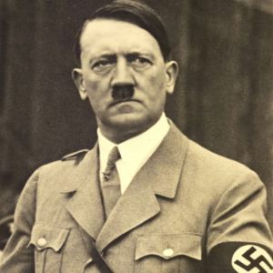

Né le 20 avril 1889 et mort le 30 avril 1945.
Combattant de la Première Guerre Mondiale ayavnt mal vécu le « Diktat de Versailles », devenu Dictateur et homme d’état Allemand, chef et fondateur du Parti Nazi, Führer du Troisième Reich, élu Chancelier le 30 janvier 1933, à l’origine de la Seconde Guerre Mondiale et de l’Holocauste.
